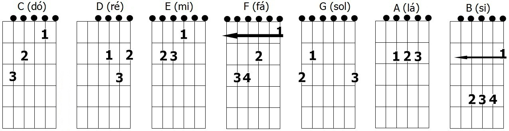
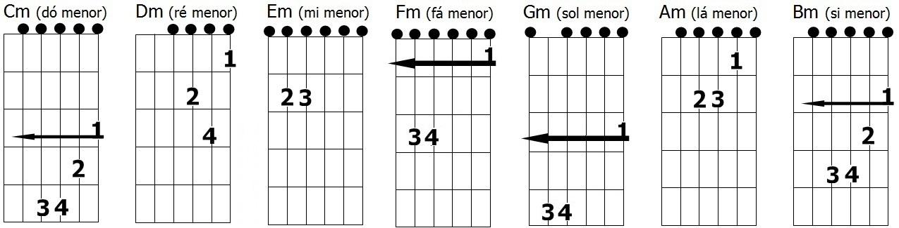
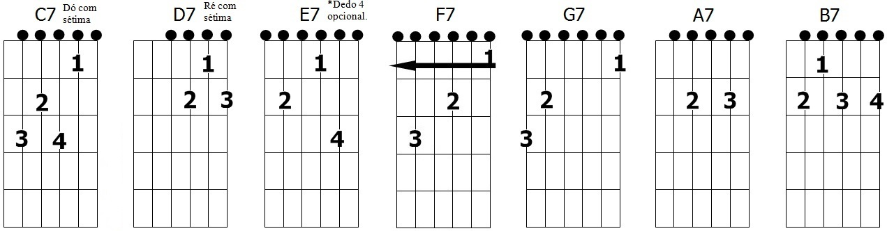
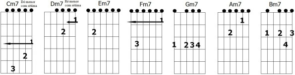

A sua Colaboração é muito importante para continuidade do Projeto
Projeto Tocar Itinerante Acesse
Um Projeto SocioCultural Miro Baía
Parceiros do Projeto
Copyrigth 2016 PescWeb - Miro Baía
A importância de trabalhar com Afinador Analógico é apurar a audição para distinguir a Afinação do Violão
A sua Colaboração é muito importante para continuidade do Projeto
Projeto Tocar Itinerante Acesse
Um Projeto SocioCultural Miro Baía
Copyrigth 2016 PescWeb - Miro Baía
A Vocalização serve para quem quer aprender a cantar e distinguir a notação da voz trabalhando a altura da sequencia dos acordes, cante as notas como se tivesse subindo uma escada
AQUECIMENTO VOCAL:
O aquecimento vocal deve ser feito antes de cantar. Exercícios respiratórios também podem ser feitos e ajudam muito no controle da respiração. Realize os exercícios abaixo lembrando-se de manter a respiração diafragmática. 1) Relaxamento: - Circular a cabeça para a Direita e para a esquerda - Circular a cabeça para os lados, para cima e para baixo - Fazer caretas procurando utilizar todos os músculos do rosto - Articular A/E/I/O/U, forçando o diafragma e anasalando as expressões Obs. De forma suave, com baixa intensidade. ME - TRÚ - VÊ - JÊ - QUE - GUE - ZÊ - BRÊ
TRABALHANDO O TIMBRE DA VOZ:
Comece com o tom grave na voz e baixando o agudo e assim conseqüentemente torna-se mais baixo, acompanhe a nota DÓ maior com a voz com um longo DÓOOOO e em seguida, aumente sucessivamente as notas de toda a escala simples, como se tivesse subindo uma escada, a cada exercicio inspire e respire
A sua Colaboração é muito importante para continuidade do Projeto
Projeto Tocar Itinerante Acesse
Um Projeto SocioCultural Miro Baía
Copyrigth 2016 PescWeb - Miro Baía
Notas musicais são sinais gráfico e sonoros que foram criados para representar as variações da altura do som musical; ou seja, organizar a linguagem musical e facilitar a composição de melodias. Existem sete notas musicais: Dó, Ré, Mi, Fá, Sol, Lá, Si
Notas Maiores C D E F G A B
Notas Menores Cm Dm Em Fm Gm Am Bm
Notas Sétimas C7 D7 E7 F7 G7 A7 B7
Notas Sétimas Cm7 Dm7 Em7 Fm7 Gm7 Am7 Bm7
A sua Colaboração é muito importante para continuidade do Projeto
Projeto Tocar Itinerante Acesse
Um Projeto SocioCultural Miro Baía
Copyrigth 2016 PescWeb - Miro Baía